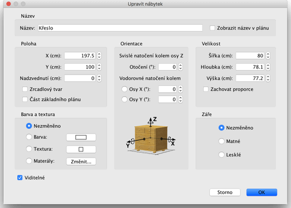

| Úprava nábytku | |||
Umístění, velikost a otočení nábytku můžete měnit myší nebo pomocí nabídky Nábytek >
Upravit.... Je-li už jeden kus nábytku v plánu vybrán, můžete měnit jeho velikost, nadzvednutí nebo otočení pomocí čtyř indikátorů, z nichž každý je v jednom rohu vybraného kusu nábytku.
|

|
Posunete-li ukazatel myši na jeden z rohů s indikátory, kurzor se změní, aby vám ukázal, že můžete tažením daného rohu měnit vlastnosti vybraného kusu nábytku
Jakmile stisknete tlačítko myši, zobrazí se kontextová nápověda ukazující hodnotu upravované vlastnosti. Nábytek může být měněn rovněž prostřednictvím okna, které zobrazíte dvojitým kliknutím na vybraný nábytek v plánu projektu nebo v seznamu nábytku, případně nabídkou Nábytek > Upravit....  V okně nábytku lze měnit jeho název, úhel otáčení, souřadnici X nebo Y jeho středu, nadzvednutí jeho dna od podlahy, šířku, hloubku, výšku, barvu, viditelnost, a zda má být tvar jeho 3D modelu zrcadlový. |
|